| 「偽りの資本主義が崩壊する時」 - 世界を救済する新通貨制度: 秘密結社、中央銀行とペトロダラーの死 | |
| LB Jones | |
| UNKNOWN (2014) | |
「偽りの資本主義」が崩壊する時 － 闇の帝国の終焉 （第二話）
|
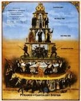 |
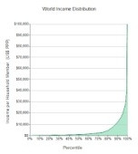 |
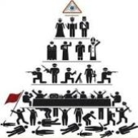 |
１）奴隷は自分が奴隷であることに気づかない
奴隷は自分が奴隷であることに気づかない。フランスの作家であり冒険家のパイロットでもあったサンテグ・ジュペリ は 2 0 世紀初め、まだその当時は多くのヨーロッパ人にとって未知の土地であった北アフリカへの飛行に関して興味深い話を述べている。当時ジュペリの同僚のパイロット達は北アフリカルートの飛行中に燃料不足で不毛の土地に着陸し、ベルベル人に捕らわれの身になることを恐れていた。ジュペリの著書の中にベルベル人に捕らわれの身となり奴隷にされたあるアラブ人の話がある。
ある日、そのアラブ人は街の市場で会ったベルベル人に騙されて彼の村まで一緒について行ってしまう。そしてアラブ人は捕われの身となり、その後何年も奴隷生活を送ることになる。彼の手足には鎖が繋がれているわけでもなく、最低限の生活に必要な住居と食糧、水、そして女が与えられている。自由はないが最低限のものは与えられている。こうして、このアラブ人は次第に奴隷としての生活に馴れてしまうのである。そしてある日、その村に待ちに待った救世主が現れた。突然その村にやって来た人々はベルベル人を攻撃し、捕われの身であったアラブ人を救ってくれた。「さあ、貴方はもう自由なのですよ。奴隷であることから解放されたのです。こんなところから出て行って自分の好きなことができるのですよ。さあ、もうこんな場所にいる必要はないのです。」しかし、アラブ人の奴隷はその村から出て行くことに躊躇した。不自由ではあるが住居、食糧、水、女が与えられていた最低限の生活で「飼い馴らされてきた」このアラブ人の奴隷には、もう人の指図を受けずに生きる自由な生活がどのようなものであるのかが分からなくなっていた。結局、このアラブ人はその村に残り奴隷であり続けることを望んだ。自分で生きることのできる自由な生活が彼にはもうできなくなっていたのである。
長い間、「偽りの資本主義」社会の邪悪な制度で捕らわれの身となって生きてきた私達の生活も、ある意味このアラブ人の奴隷の話によく似ている。私達の多くはこの創られた「偽装資本主義」社会の中で、この制度を牛耳る「闇の支配者達」の奴隷であることに気づいてなかった。アラブ人の奴隷と同様、私達もまた「偽りの資本主義」を闇で操る支配者達から最低限の生活を与えられ、これで満足して生きるように飼い馴らされてきた。貧富の差が異常なまでに拡大してしまった今日、貧困で苦しむ人々はこの最低限の生活と人間の尊厳さえも与えられていない。今、私達を「経済奴隷」として上手く悪用してきたこの邪悪な制度は、もう既にガラガラと音を立ててピラミッドの底辺から崩壊しており私達はその最終段階にある。「闇の支配者達」は富という名の全てのパワーを失い、長年彼らによって搾取され続けてきた富が私達に再分配される日はもうすぐそこまで来ている。私達は今、経済奴隷としての生活から解放され自由な社会を手に入れようとしている。その瞬間が訪れた時、このアラブ人の奴隷のように自由になることを躊躇してはならない。私達は経済奴隷であり続ける必要もなければ、新たな奴隷商人達に怯える必要もない。
現在、この地球規模の地殻変動は経済界だけでなくエネルギー、技術、医学、天文学、宗教等のすべての分野で起こっており、世界は確実に自由な社会への扉を開きつつある。新しい世界の到来はもうすぐそこにまで迫っている。時計の針は刻一刻と「闇の帝国支配」の終焉と「偽りの資本主義」からの解放の道へと変化を刻み続けている。一度前に動き始めた針が逆戻りすることはあり得ない。
|
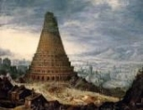 |
|
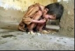 |
２）変化の過程に現れる「偽りの救世主達」に騙されるな
ここで１つだけ注意すべき点がある。この変化の過程において私達は救世主の衣服を身に纏った別の「闇の支配者達」に遭遇するかも知れない。彼らは救世主のふりをして上手に私達を別の奴隷制度へと導いてゆく可能性もある。世界規模の地殻変動が起こり、「闇の支配者達」の内部分裂も起きている。昨日までは手を取り合って人類の大多数である私達を奴隷のように搾取してきた者達が、今度は自分達の悪事が世間にばれて危機的な状況に陥ると悪かったのは自分ではなく他の結社である等の責任の擦り合いをしているからだ。今、全世界が反旗を翻し彼らにはマリー・アントワネットのような運命が差し迫っているので彼らにとってはこれが最後の命拾いなのであろう。本当に信頼できるものかどうかは注意深く見極める必要がある。リビアのカダフィ大佐の劣勢が明確になっていく中で国連の場で涙を流しながらの見事な演技で寝返りを打ち、犠牲者を演じて自分の罪を煙に巻いてしまった当時のリビア国連大使アブドゥル・シャルガムを彷彿とさせる。何が正しいのかを判断するのは私達一般市民である。この地球規模の変化は「闇商人達」の勢力争いではない。
ちなみにカダフィが殺された理由は、彼がペトロダラーを捨てユーロでの原油取引を望んでいたからである（イラクのサダム・フセインが殺されたのも同様の理由でありイラク戦争は原油以外にももう１つ重要な理由があった）。カダフィは訪米の際に米放送局とのインタビューでアルカイダについて質問され、次のように答えている。「アルカイダがどこにいるかって？ここニューヨーク（米国）に決まっているだろう。」その後、世界は誰が正しかったのかを知ることになる。ヒラリー・クリントンはアルカイダを作ったのは米国であることを認めている。そして今、中東で暴れているイスラム国家という訳の分からない連中も、アルカイダの名前を変えただけの米国の支援を受けているテロ部隊であることが中立的なメディアにより明らかにされている（イスラム国の兵士の腕に米国軍という刺青の入った写真までメディアで公表されている。そして、多くの国々のデモの際にも見られるように、最初は静かな抗議活動で始まったデモが突然暴徒化する背景にはこのような暴力的な演劇部隊のサクラ達が「闇商人達」により送り込まれているからである）。
今後の地球規模の変化の過程において地球の人 口 9 9 ％を占める私達一般市民は同じような間違った道を歩まないように「偽りの救世主達」を注意深く見極める必要がある。悪魔が天使の衣を着て私達の目の前に現れるかもしれない。１つの邪悪な制度から他の「闇の支配者達」の制度に移るだけであれば、私達が今得ようとしている自由は真の自由とはなり得ない。そして、これは「欧米からアジア ・ BRIC S 」又は「米国からユーラシア」というような地域間のパワーシフトではなく （ BRIC S 及びアジアの国々は既に「闇商人達」の今まで行ってきた悪事に対して「否」という答えを突きつけてきたので、現在そのように地域間のパワーシフトが起こっているようにも見えるが）、最終的な目的は世界 の1 ％にも満たない「偽りの資本主義」を支配してきた「闇商人達」から、世界人口 の 9 9 ％の大多数を占める私達一般市民がその力と富を取り戻す動きである。
これは少数派の悪党達が私達の先祖代々から略奪してきた、本来は私達一般市民のために使われるべき富の再配分を伴う平和的且つ建設的なプロセスである。現在、この「闇の支配者達」に対して「否」と言い始めた欧州のドイツを中心とする一部の国々（フランス及び英国も）同様、最も邪悪な「闇商人達」によって犠牲にされてきた米国の一般市民達も、「闇商人達」を追いやれば米国内でも同様に１％か ら 9 9 ％へのパワーシフトが起こる。米国の一般市民もまたワシントンにいる一部の（米国人でない）外国人利権グループにより略奪されてきた犠牲者である。欧州についても同じことが言える。そして最終的には地域間のパワーシフトではなく世界規模の地殻変動が起こる。これは「偽りの資本主義」社会を支配してきた「闇の支配者達」から搾取されてきた側である大多数の一般市民へのパワーシフトである。そして、この変化は「闇商人達」が支配してきたすべての国々で現在、雪崩のように次から次へと起っている。今、何気なくニュースで聞く突然の高度な科学・技術・医学等の進歩や新しい歴史の発見は全く新しいものではなく、「闇商人達」がピラミッドの頂上で一般市民である私達から上手く封印してきた何十年、何百年、何千年も前から存在する「知識」である。そして、この「封印されてきた知識」こそが彼らのパワーでもあった。
|
|
|
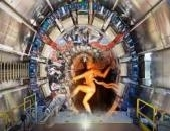 |
３）意図的に創られた貧富の差（グローバリゼーション）
グローバリゼーションは一般に定義されているような地球規模の国際化ではない。こ こ 1 0 年程でものすごい勢いで全世界のすべての産業を飲み込み、地域社会と文化を完全に破壊してきたグローバル化という大波は、私達を巧みに操ってきた「闇の支配者達」によって計画的に仕組まれた「罠」である。地球規模の国際的なビジネスや建設的な社会を築くことが目的ではなく、これは巧妙に仕組まれた地球規模の「経済奴隷制度」であり、一度その「罠」に嵌まると逃げることはできない、一般市民にとっては生活水準が下降していくだけの「アリ地獄」である。
世界人口の１％にも満たないごく一握りの「闇の支配者達」がいかにして世界の人口 の 9 9 ％を占める私達を「世界規模でより効率的な低賃金奴隷労働者として調達するか」という質問の答えがグローバリゼーションであり、彼らは意図的に金融危機を起こし、彼らの制度を用いて彼らの僕である各国の政治家達を操り、巧みな議論（世界競争に勝ち抜くため、経済危機が起こったので労働コストを削減しなければ会社が存続できない等）で安価な労働を強要している。「ホワイトカラーのオフショアリング」と「雇用主に逆らわない人口知能のロボットの導入」により先進国の労働市場は構造的に完全に破壊されてしまった。現代版の経済奴隷制度は「闇の商人達」が自ら築いたピラミッドの頂点に立ち、残りの世界人 口 9 9 ％を容易に支配・監視するために国境を越えた１つの「世界統一政府」の樹立を目的としている。
（ちなみに米国ではもう既に非常事態の際に国全体 を 1 0 区画に分け、ご丁寧に武装した警察官 と NS A （アメリカ国家安全保障局）が州政府の法律に従うことなく市民の監視・取り調べを行うことができるようになった。非常事態とは金融危機で暴動が起きた際の事態を想定しているのであろう。米国には至る場所 で FEM A キャンプと呼ばれる収容所が、米国民の多くが気づかない間に彼らの血税であちこちに建設された。上記機関 （ NS A ）は世界中で一般市民にも諜報活動を行っていることが判明されており、一般市民の政治趣向・活動等も彼らの監視対象に含まれる。
これは英作家のジョージ・オーウェルが名作 「 198 4 年」に描いた監視管理社会さながらだが、彼はこれを予言していたのではなく結社内部者であったため彼らのビックブラザー計画を理解していたとされている。私達は改めてソーシャル・ネットワークの裏に潜んでいるネット業界の最重要顧客について考えるべきである。ネット会社は政府に要求されるので「渋々と情報を提供しなければならない役」を演じているが、そこには膨大なビジネスがあり、政府は彼らにとって最大手顧客というだけではなく、むしろ同胞のようなものであろうと指摘する中立的なメディアの意見は的を得ている。）
１つの政府、１つの宗教、そして１つの通貨により「闇商人達」が世界をコントロールする仕組みを「新世界秩序 （ New World Order = NW O ）」と彼らは呼んでいる。国際会議等の公式な場で世界の頂点に立つ政治家達がこの言葉を何十年も使用してきたことに気づいたであろうか。一方でこれらの勢力に対抗するイリミナティ（結社）の一部は上記の闇商人達の世界を「旧世界秩序 （ Old World Orde r ）」と呼び、真の「新世界秩序 （ NW O ）」はこの「旧世界秩序 （ OW O ）」に対立するものであると主張する。
しかし、ここでも私達は誰が本物の救世主であるかをよく見極める必要がある（全てを決めるのは最終的には自分達なので実際には救世主などはいないのだ が) 。私 達 9 9 ％の一般市民はこれらの結社間の争いに巻き込まれる必要もなければ、そのような人々が世界を操る権利を認めた覚えもない。地球のゆくえを決めるのは大多数を占め る 9 9 ％の一般市民である私達である。そして、今後の地球のゆくえを決める重要事項はすべて私達の目に見える場所で一般の人々の大多数の承認を得て行なわれるのが当然である。彼らのピラミッドはすでに崩壊している。
現在、地球規模で起こっている変化は世界人口 の1 ％にも満たない一握りの一族達とその僕達が搾取してきた世界の富を大多数である一般市民に再分配する動きであり、これらの「闇商人達」が意図的に行ってきた戦争、貧困、病気、自然破壊、異常気象等の詐欺劇場と農作物・水・資源等の支配を終わらせることが目的である。
何千年も前の古代の時代よりトーラスのフリーエネルギーは地球上に存在する。それを封印してきたのがこれらの「闇の支配者達」である。無償のエネルギーが存在する世界がどのくらい飛躍できるのかを想像できるであろうか。そしてこの無償エネルギーの存在は石油や原子力やドルを支配してきた「闇商人達」のパワーをすべて奪うのである。彼らが最も恐れてきたことが今、起こっている。
|
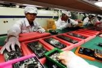 |
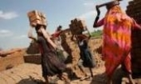 |
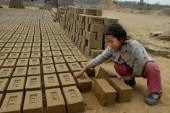 |
４）「闇商人達のモノポリー・ゲーム」が世界の文化と社会を破壊した
「偽りの資本主義」社会において自由競争という概念はない。｢闇の支配者達｣にとって奴隷に自由競争を与えるなどという考えは最初から存在しないからだ。一般の人々にとっての「自由」は彼らにとっての「不自由」である。彼らは「自分達が勝つルール」のみを作る。政治家も司法も警察も全て自分達の支配下に納め、彼らは「自分達が必ず勝つモノポリーゲーム」でみずからサイコロを振り続ける。駒である私達は終わりのないメビウスの輪の道をグルグルと振り回されるだけで、その道はどこまで行っても「同じ次元の奴隷制度」であることの罠に気づかない。そこには「見せかけの自由」しか存在しない。そして、民主主義という見せかけの国旗により、経済奴隷である私達はそこにあたかも自由な市場と自由競争が存在するかのように長年思い込まされてきたのである。選挙は全て闇商人達にコントロールされ、紙も電子投票のデータも改ざんされ、メディアは投票前から既に準備されていた開票速報の原稿をあたかも実際の結果のように読み民衆を操るのである。ニュースが流れる前から投票結果は既に決まっている。これは全ての国々で起こっている。多くの人達が資本主義だと信じ込まされてきたこの「偽りの資本主義」制度は、実はすべてピラミッドの上にいる「闇商人達」の利権のための制度だったのである。
社会主義社会では需給は政府によりコントロールされる。「偽りの資本主義」制度下でも仕組みは同様で、世界市場の需給及びそれらに影響を与えるイベント（戦争、経済、異常気象、病気、政治等）はアダム・スミスの「見えざる手」ではなく、「闇商人達の見えざる汚い手」により上手くコントロールされている。これは「闇商人達」が属する社会のたっ た1 ％以下の少数の利益を生み出すためのメカニズムである。競合他社を食い潰し、各国の「文化と社会」を破壊し、最後に生き残るのは彼らの資本下にある企業のみである。これがグローバル化（＝国際化ではない）の真の正体である。そしてこれらグローバリストのペテン師達により仕掛けられた「地球規模の低賃金奴隷制度」の「罠」に世界人口 の 9 9 ％を占める一般市民達が引きずり込まれてしまったのである。
勿論、グローバリゼーションという仕組みに「真の競争」などもあるはずがない。この仕組みのカラクリは、世界の富のほぼ全てを既に支配している世界人口 の 1 % にも満たない「闇商人達」が、その富をさらに雪だるま式に加速させて膨らませるために巧妙に仕組まれた邪悪な手口である。そこにはゼロサムゲームしか存在しない。それは世界人口 の1 ％がさらに資産を増大させてゆく一方で、残り の 9 9 ％は延々と搾取され続けるゲームであることを意味する。
資本主義も社会主義の指導者達も、彼らの個人資産がスイスの銀行で仲良く一緒に眠っていることを考えれば、この２つの制度は表向きこそ鏡の裏表のように見えるものの、実際に鏡の中を覗き込むと鏡の国のアリスもビックリする同一のパラレルな世界であったことに気づくであろう。そして、この両制度を「偽りの国旗」作戦で操り、２つの世界大戦を含むすべての戦争ビジネスを起こし、巨万の富を得てきたのがこの邪悪な「闇商人達」である。戦争が起こったので銀行屋が儲かるのではない。銀行屋が儲けたいから戦争を起こすのである。そして今、戦争ビジネスが多くの人々に見破られ始め、シリアもイランもウクライナでの 第3 次世界大戦に失敗すると、今度は生物化学兵器を使用した（エボラ も SAR S もエイズもすべて研究室の中でしか作ることのできない細菌である）「病原菌詐欺ビジネス」で世界を脅し、製薬会社を儲けさせ、人口気象兵器を使い異常気象を起こし、逆らう国々を次から次へと破壊して脅し、農業・種子の独占（過酷な状況でも育つ害虫をも寄せ付けない毒が主成分の作物の種のビジネス）をも行おうと虎視眈々と狙っているのである。歴史は繰り返すと言うが、同じ悪党プロダクションが何百年も同じ映画を製作して、その僕である政治家・官僚劇団の詐欺役者達が演じているのであれば、戦争も、細菌も、金融危機も、気象異常も、すべてが同じ仕組みの詐欺である。おまけに彼らの大好きなカバラ の 1 1、 4 6 と言った数字の日に色々と事件を起こしてくれるので、クリスタルボールの中身を見ているかのように全ての証拠が明確になる。背後に見え隠れする利権を見ればおのずと手の打ちが分かるような安っぽい悪徳商法の芝居である。そして、これに宗教が関わり多くの人々を洗脳しているので非常にたちが悪い。
「闇商人達」が選出してきた政治候補達を首尾よく追い払ってき た BRIC S 諸国の中には衛生的 に G 7 の国々に勝るとは到底思えない国々もあるが、なぜ か BRIC S 内でエボラ感染は起こっていない。エボラ詐欺の協力 者( 政治 家) がいないからであろう。今、「闇商人達」は人類から反撃をくらい瀕死の状況で悪あがきをしている。なぜかエボラが発生するのは今までこの悪党達に無理やり付き合わされてき た G 7 の国々である。さらに、日本で は 7 0 年ぶりに突然、東京の一部の公園だけでテング熱が発生し（南の沖縄や九州でなく）、ご丁寧に外来種の毒クモが突然あちこちで見られるようになったというニュースも流れた。これは朝鮮戦争時代に米国軍が飛行機からメスのねずみと一緒にコレラ等の菌等を筒にいれてばら撒いていたのによく似た手法ではないか。ナチス・ドイツの細菌兵器の技術は関東軍から得たものだとされている。そして、アルゼンチン で 196 0 年代後半まで生き延びたドイツのヒットラーと山下財宝で知られる山下大将が母親の異なる兄弟（父親はスペインのヴィクトリア女王の双子の兄弟であったタラノ王 子 Prince Tallan o ）であったことが判明された今、戦争を起こし、戦勝国にも敗戦国にも莫大な借金をさせて、銀行家の一族達に国を乗っ取らせてきた本当の世界の歴史を各国政府が書き換え始めるのもそう遠い将来ではない。既存の戦争の歴史の本は「闇商人達」によって都合良くねつ造作り話である。

５）経済ファシスト達が支配する世界の中央銀行
紙屑紙 幣( 不換紙 幣 Fiat Money ) のばら撒き政策が貧富の差を加速させる
グローバリスト達により強要されてきた「世界規模の低賃金競争」は先進国の労働市場と社会・文化を完全に崩壊させた。意図的に低く抑えられた失業率（特に日本では補助金や非正規労働者の拡大で恒常的且つ意図的に失業率は低く抑えられている）の裏で、先進国における貧富の差は許し難いレベルにまで拡大し、中間層は消え、貧困に苦しみ飢える人々が増えている。これは労働市場における構造的な問題と不平等な税制が原因であるのに対して、「闇の支配者達」の所有機関である各国の中央銀行は量的緩和でこれでもかという量の紙屑紙幣をヘリコプターからばら撒き続けている。長い間、労働者達は失業や賃金カットには敏感に反応してきたが、まさか中央銀行の量的緩和が貧富の差を拡大させる原因の１つであることには多くの人々は気づかなかったのである。
ゼロ金利で（現在は一部マイナス金利）でお金を借りられる富裕層が世界中の金融商品、貴金属、不動産とありとあらゆる商品に投資・投機をして富を拡大させていく一方で、中央銀行が刷り続けている紙屑紙幣に対して金利負担を強いられているのは世界人口 の 9 9 ％を占める一般市民の納税者達である（中央銀行が国債の買い入れを行い市中に資金を配給する際に民間所有の中央銀行の所有者一族達に対して納税者が支払う国債の金利負担）。このような愚かな政策を続ければ続ける程、もう既に許し難いレベルにある貧富の差はさらに爆発して拡大し続けてゆく。これこそ正にリーマンショック後に世界の多くの国々が歩んできた新たな破滅の道であった。
先進国が労働市場の構造的な問題を解決できない理由の１つは、現在世界が置かれているこの低賃金競争にある。先進国の労働 は BRIC S へと流れ、今度はそ の BRIC S の仕事がより賃金の低い発展途上国に移ってゆく。賃金の高い国から安い国へ。先進国の労働賃金が下がり続けた一方で「闇の支配者」達の僕である企業経営者達のみが天文学的な報酬を得てきた。日本はこの「賃金デフレの罠」に気づき始めたが、南欧では日本が過 去 2 0 年に渡って経験してきた賃金デフレにまだ直面し始めたばかりである。しかし、労働市場の構造的な問題は金融政策によって解決することはできない。そして、賃金デフレのために中央銀行が市場での資金供給量を爆発的に増やして人工的にインフレ率を押し上げようとしても賃金上昇には繋がらないのである。構造的に破壊され、安定した仕事が容易に見つからない今日の先進国の労働市場においては、人々は将来の不安のために貯めるので中央銀行がヘリコプターからいくらお金をばら撒いても、最悪の場合、それは投機家の投機に使われるだけで実体経済は恩敬を受けず、雇用も増えず、賃金が伸びないまま他の物価だけが上昇してスタグフレーションを誘発してしまう恐れがある。富裕層は株式投機で資産を増やす一方で、賃金が増えない低所得者・中間層の生活費はどんどんと上昇し（そして税負担も富裕層だけ優遇し、低所得者・中間層には重い税負担の状態のままでは）、結果として可処分所得が目減りする。そして貧富の差は更に拡大するという悪循環のパターンを繰り返すのである。
一方、世界各国に散らばっている「闇の支配者達」が所有者する名前を変えただけの「大きすぎてつぶせない銀行」支店は、その僕である各国の政治家達に「金融機関が潰れると経済が破たんをする」などの、いつものオオカミ少年的な脅し戦術で人々を騙し、公的資金を一族所有の銀行に投入させる。そして上手く騙して得た公的資金で厚かましくも株式・債券・為替・デリバィブ・商品市場等で、彼らが「電子の世界で創り出したホログラムのようなタダの数字」を上げ下げしてはぼろ儲けをしてきたのである。ギリシャを潰した金融詐欺師が人々の血税を騙し取り、公的資金でさらに金融ギャンブルをして役員とトレーダー達に途方もない報酬を支払ってきたのである。
これが詐欺でなければ何であろう。死刑囚が縄に掛けられるか電気椅子に座らされる前に行う最後の晩餐のように滅びてゆく者達の「最後の金融手品」であろうか。結果として彼らは自らの破滅を招いてしまった。「市場最悪の金融デリバティブ手品」をご披露した悪党手品師達は、愚かなことにたかが民間の金融機関が国を支配している事実を世界に知らしめてしまったのである。そして、このたがが民間の金融機関だけでなく、世界の資本を牛耳る世界のトッ プ 20 0 を占める上場企業も、実は各国の政府の上に位置しているのである。公的な政府が民間企業によりコントロールされている。これこそが闇商人達のピラミッドの構造であり現代版の「経済ファシズム」である。なんと世界の中央銀行は「経済ファシスト達」によって牛耳られてきたのである。
ジョン・レノンが殺される前に「世界は狂人によって支配されている」と言っていたのは、このような狂人連中について話していたのであろう。ジョンは正しかった。これらのバングスター達（バンカーとギャングスターの組み合わせで「ギャングの銀行屋」の意味）は大トロ（＝まぬけ）を上回る、「超」が付く「最高級レベルの狂人達」である。
今年に入ってから既に数十名のバングスター達が死亡している。彼ら は 198 2 年にロンドンの橋の下で首を吊って死んだイタリア人の神の銀行家で知られるアンブロシアーノ銀行の総裁であったロベルト・カルヴィ（バチカン銀行に関するマネーローンダリングの疑い）からは何も学ばなかったのであろうか 。 197 8 年に法皇に就任したヨハネ・パウロ一世はバチカン銀行の改正を表明していたが、就任後わず か 3 3 日で死逝している。当時のバチカン銀行総裁のポール・マルチンクス大司教とバチカンのナンバー２であるヴィロー枢機卿 がP ２ロッジのメンバーあることを知り解任しようとしていたことが原因だとされている。
さて、こ の P 2 は現在改心をして世界の貧困を救済するための協力を申し出ているようである。しかし、これが一時的に自分達の身を守るために悪魔が天使の衣をまとい救世主を演じているだけのものか、私達は注意深く見極める必要がある。そして、意図的に流される「間違った情報」作戦にも惑わされないよう注意しなければならない。「闇商人達」が生き続ける限り、世界は同じ間違った歴史を繰り返す。
|
|
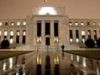 |
|
６）世界人口 の1 ％が払わない税金は残り の 9 9 ％のツケとなる
現代版の「闇商人財閥解体」の必要性
「闇商人達」とその仲間達が自分に都合良く決める富裕層への優遇税制もグローバル化と共に巧妙化していった。彼らが「節税と呼んでいる巧妙な脱税」の手口もここ数年ステロイド注射を打ったスポーツ選手のように強固になっていった。世界人口 の1 ％の富裕層が払わない税金は全て残り の 9 9 ％の人口のつけとなる。貧富の差がより拡大している理由がここにある。貧富の差を解決するために必要な政策は税制であり、富裕層に有利で貧困・中間層に重すぎる不平等極まりない現在の税率を変える必要がある。私達は「闇商人達」が必ず勝つ仕組みである現在のモノポリーゲームのルールを変える必要がある。いつの世でもゲームのルールを支配するものがゲームの勝者となる。そして、今後は私達がゲームのルールをつくる番である。不平等なゲームはもう既にゲ－ムオバーされている。
現代版の奴隷商人達は世界の株式市場に上場している会社の資本の 約 40 % （と配当 の 6 0 ％）を牛耳っている。現代版の世界規模の「闇商人財閥の解体」作業が必要である。民間企業の資本が国の資産を越えた時、民間の一族達による国の支配が始まる。経済ファシスト達が国と市民を牛耳る前にそれを防ぐ必要がある。今後は多国籍企業の資本が（国の資産対比で）ある一定の水準（何分の一等）に達した時点で、その多国籍企業は解体されて資本関係にない幾つかの企業に分けるべきであろう。
自分達でグローバル化を演出することにより闇商人達は国境を越えた低賃金奴隷労働を調達することを可能にした。オフショアリング等を活用し、現代版の奴隷達を世界中に点在させた彼らの企業グループのネットワークを活用し、最も効率的に調達・分配させ働かせることにより労働コストを削減する。インターネットの存在により知的労働であれば国境を越えて調達できる。そして、検索エンジン会社はプライバシーを侵害しつつ無料で集めた膨大な情報をもとに人口知能のロボットという「無給で働く労働者」を作ってしまった。これこそがファシズム経済を牛耳っている闇商人達の「究極の選択肢（タダで働き主人に逆らわないロボット従業員）」である。（ちなみに「闇商人達」の他の下請け企業同様、検索エンジン会社も闇商人達の息のかかったシンボルを使用している。赤、緑、黄色、青の組み合わせと四角形にも五角形にも見えるロゴはある種のシンボルを意味している。）
各国の政治家や役人達を僕としてコントロールし、自分達の「世界統一国家」の規定を各国の一般市民に強要させ、そのグローバルな競争力により現地企業を潰し、現地の法律を無視し、脱税さながらの節税によりブラックホールの中に大量の資金を隠し持ち、その「帳簿上にうまく出てこない資金」でさらに競争力と高め、やがては世界中のすべての競争相手を飲み込んでゆく。彼らの資産は天文学的な数字ではあるものの監査の対象にはなっていない。監査法人も彼らにコントロールされており、監査法人の他のビジネス（コンサルティング）はこの巧みな節税の技法を伝授することでもあるからだ。
しかし、現在のデジタル社会では、この「帳簿上にうまく出てこなかった」闇商人達の資産の追跡も容易にできる半面があることも事実である。案外、現代版のマリアンヌ（偶然にも彼女はフリジア帽を被っているかもしれない）やねずみ小僧達は、コンピューターのボタン操作１つで人類が苦しむ貧富の差を一瞬にして解決してくれる能力を持ち合わせている凄腕連中かもしれない。リーマンショックの直前に「自分達の保有している金融資産の正当価格（デリバティブ紙屑商品などに正当な価格など最初から存在しないのだが）が分からなくなった」だの、自分達がもともとどこかから盗んできた資金で組成したファンドが「泥棒に乗っ取られてしまった」だのと、まるで現代版の狂言の舞でも踊っているかのような呆れた主張をカリブ海の法廷で訴えた自作自演の金融詐欺師集団のような連中がいたが、世界はもうこれ以上、金融強盗達の詐欺戯言に付き合ってやるほど暇ではない。
あまりにも露骨なオオカミ少年の詐欺業を繰り返して世間を騙してきた結果、現代版のマリアンヌやねずみ小僧達が首尾よくこの悪党達が盗んできたお金をデジタル上で再分配して貧富の差を解決してくれたとしても、世界は悪党連中の主張をもう信じることもなければ連中が泣きつく法廷ももうこの世には存在しないのである。これが金融オオカミ少年達の末路であろう。
そう言えば近年、ニューヨークで火災のドサクサに紛れて地下室の金塊が無くなったという狂言を演じたバングスターもいたが、地下室の金庫であったためにさすがにホログラムの飛行機を突っ込ませて爆弾でビルを解体させておきながら「漏れた重油でビルがあっという間に（ビルの内部で爆発している音も聞こえるのに）崩壊した」とか、ミサイルを撃ち込んでおいて「飛行機は蒸発してしまった」、などという古い手品を再使用することはできなかったようである。しかし、火事で一部の金塊は蒸発してしまったらしい！本当に愉快でおめでたい連中達である。医療がどんなに進歩した現在でもバカにつける薬はどこの国にも売ってはいない。
|
|
|
|
７）租税回避地、ヤップ島の石貨と米連銀の金庫に眠る金塊
資金の流れは海流によく似ている。（税率の）高い場所から低い場所へと流れ、どこかで合流し、別れ、そして更に低い場所へと流れてゆく。世界の税制をよく知り尽くし、その制度をコントロールしている「闇商人の一族達」は、まるで自分達の手の平の線を指でなぞるかのように容易に資金を世界中に点在する租税回避地（タックス・ヘイブン）から他の租税回避地へと瞬間移動させることができる。各租税回避地に存在する「税制の抜け穴」を地下のトンネルで上手く結び、彼らのみが器用に渡り歩けるように世界中に「毒蜘蛛の糸のようなネットワーク」を張り巡らしている。
ミクロネシアにある島国が存在する。現地の人々が裸足で歩く砂浜が奇麗なのどかな場所である。この国を経由して膨大な額の国の資金が取引されているなど一体どこの誰に想像できるであろうか。そのような莫大な資金が滞留している間、帳簿上は膨大な富がこの島国にあるようにも見える。しかし、これは本当にこの国の富なのであろうか。仮に帳簿上の数字が一時的に増えただけで、この国の人々の生活が突然豊かになったとでもいうのであろうか。
そして、この島国からそれ程遠くない場所に石貨で知られるヤップ島がある。経済学者でシカゴ学派のマネタリストである故ミルトン・フリードマン氏は著書の中で、このヤップ島の石貨と現代の金融システムについて興味深い比較をしている 。( 以下引 用 )
.............................................................................................................................
この石灰石でできた石貨はフェイと呼ばれ、その富の価値により様々な大きさをしている。このフェイは注目すべき特徴を持ち合わせていた。それは石貨の持ち主は石貨を「所有せずに済む」点である。簡単には運べない高額の（大きな）フェイの売買が成立した場合、ヤップ島では新たなフェイの所有者は自分の所有権が認められるだけで満足としていたのである。交換を証明する印も必要しないばかりか、フェイは前の持ち主の庭に置かれたままであった 。 189 8 年にドイツ政府がカロリン諸島をスペインから買収した際に島民に小道を車が通れるように修繕するように通達を出したが島民はなかなか従わなかった。考えたドイツ政府は通達に従わない島民に対して罰金を科すことにした。島民が所有しているフェイに黒いペンキで×印を付けさせ政府所有としたのである。するとフェイの所有者はあたかも貧困に陥ったかのように悲しんだ。そして島民は心を入れ替え、道の修繕に取りかかった。それを見た政府は、今度は役人を送りフェイに書かれた×印を消して回った。すると島民はあたかも自分達の資本ストックが戻ってきたかのように喜んだのである。
193 1 年か ら 193 3 年にかけてフランス中央銀行が 金1 オン ス 2 0 ド ル 6 7 セントという価格では米国が金本位制を維持できなくなるのではないかと懸念していた。その際にフランス中央銀行が米国で保有しているドル資産と金の交換をニューヨーク連邦準備銀行に持ちかけ、太平洋の運搬を避けるために金をニューヨーク連銀内に開設してあるフランス中央銀行名義の口座へ移管することを依頼した。この要求に応じた米連銀は従業員を金庫へ送ると金塊を別の棚に移し「フランス所有」というラベルなり封印を貼ったのである。この結果、「金、減少！」という文字が経済新聞の見出しを飾り、アメリカの通貨制度を脅かす事態などと騒がれた。米国の金準備量が減り、フランスの金準備量が増えると、為替市場ではドル安、フラン高に動いた。
.....................................................................................................................
同氏はこのアメリカからフランスへの金の｢流出｣が結果的に は 193 3 年の金融恐慌の引き金の要因の１つであったと指摘している。そして、石貨に×印を付けられて貧しくなったと信じたヤップ島民達と米連銀の地下金庫の棚に貼られたレベルのせいでドル安になったと信じた米連銀の間に本質的な違いがあるのだろうかと質問を投げかけている。
同氏がこれを指摘した時代は、まだ米連銀の金庫の中に眠る金塊が純金であることを疑う者は誰もいなかった時代である。現在のように各国政府が自分達の預けている金塊が、中身をタングステンにして金メッキを施しただけの偽物の金塊にすり替えられてしまったのではないかと疑い、米連銀に対して自分達が所有する金塊の返還を要求しているような現代の話ではない。米連銀はドイツや他の政府からの各国所有の金塊の返還の要請に対してまだ部分的にしか応じていない。
ベネズエラの元大統領のチャベスも同様に同国の金塊の返還を要求した後に死亡している。現在はどんなに離れた場所からも、たとえ建物の中にいてもある種のレーザーを集中的に人に浴びせることで心臓麻痺やガンを起こさせる技術が存在し、中南米等の政治家達に対して使用されたことがエコノミック・ヒットマン（相手国に経済政策を押しつける「経済政策恐喝屋」で通常はコンサルティング会社やシンクタンクの肩書を持って行動している）であった人々により一部メディアで公表されている。
|
|
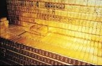 |
|

８）ペトロダラーの終焉と原油価格の崩壊 －フリーエネルギーの時代
BRIC S という名称を最初に使ったのは米国の投資銀行である。この投資銀行の母体がトレジャリーという秘密結社であり、その秘密結社の目的が「金儲け」であるとするならば、この投資銀行をアドバイザーとしてきたワシントンにある「米国株式会社」（一般の米国人とは関係のないアメリカ国外の政治的意図により運営されている政府なのでこう呼ばれている）が、過去には低賃金労働の調達先としてしか考えていなかっ た BRIC S 諸国からブーメランのような攻撃を受けている現状は実に皮肉な結果である。 （ BRIC S は近年のインドやブラジルの選挙で見られたように「闇商人達」が送り込んでくる僕である政治家達の当選を首尾よく防ぎ、現在「闇商人達」の僕である政治家が仕切 る G 7 の国々に比べて多少はまともな政治環境にある。）
そして 、 BRIC S は「闇商人達」の急所を突いてしまった。最初の一撃は貿易の際にドルを使用しない差金決済。世界 の GD Pの4 分の１を占め る BRIC S がその貿易の取引を紙屑のドル紙幣を使用せずに各国の通貨での差金決済で既に行なっている。そしてワシントンにとってのアキレス腱であるペトロダラーでの取引を断り、他通貨での原油取引を行ってしまったのである。ペトロダラーはもう既に静かにその死を迎えてしまっている。
ドルが世界の基軸通貨として通用していたのは米国がサウジアラビアを軍事的に守る代わりにサウジが原油取引を米ドルで行わせてくれていたからである。しかし、現在のようにサウジと米国の間もギクシャクしてくると、そのような「良き日時代」も続かなくなってしまった。そして、通常であれば犯罪であるはずの価格・生産調整のカルテル が OPE C （石油輸出国機構）だけに容認されてきたこと自体が異常だったのである。さらに原油価格も取引量の少な い WT I（ West Texas Intermediat e ）が原油価格の代表的な指数として使われてきたことも原油価格の乱高下を招いていた原因であり、原油取引投機ビジネスには最高のお膳立てであった。今日まで金の値決めがロンドンの同一族出身のたった数人のメンバーにより行なわれていたのと同様にこれは異常だったのである 。 Libo r 金利や為替レートを自分達の都合よくごまかしておいて、それがディーリングルームの風習だと勘違いして生きてきたチンドン屋ディーラ－達のようなものある。「王様は裸だ！」と子供が指摘しなければ誰も口出しをしなかったように、「連中は泥棒だ！」と誰かが叫ぶのに世界は随分と長い年月を費やしてしまっていたようである。
欧米の金融機関は今年に入ってニュースで公表されているだけで数十人もの死者を出している。自殺や事故及び病死とされているものの家族が巻き込まれた悲惨な例もあり、「闇商人達」の資本下にある金融機関だけでこれほどの数の従業員が偶然に次から次へと死んでいくのは異常である。複数のメディアと犯罪の専門家達は、これらがバチカン銀行に関わる取引と超高速取引に関わってきた従業員である可能性を示唆している。口封じかトカゲのしっぽ切りであろうか。これでは法外な給与と賞与を首尾よく手にしてきた社長や役員達が早く逃げたくなるのも当然である。バングスター達としても栄光のどす黒い銀行のピラミッドの階段を上がり詰めると、そこで待っていたのはなんと「死」では、もういくら紙屑の札束といつまで存続するかも分からない会社の自社株を貰っても何の意味もない。悪党の最後というのは所詮いつの時代もこんなものなのであろう。彼らはアンブロシアーノ銀行の事件からは何の教訓も学ばなかったのであろうか。
このように名門を偽って密室で価格を決める「伝統を重んじる詐欺」が許されるのであれば、誰でも明日から道端の石ころに１億円の値段を付けて大金持ちになれる。悪徳金商人達のグルのダイヤモンド商人達がおこなっているような手口である 。 Tint o （ティント）という単語はスペイン語で「染まった」という意味である。資源やダイヤを掘って血に染まってしまった赤い大地や川を意味するのであろうか。
金の市場の中心地はもう既に中国に移り中国はこの日のために数年前から金のアドバイザーを北京に招き入れ、買わされ続けてきた米国債という紙屑のヘッジとしてここ数年大量の金を買い漁ってきた。石油が今後どうなるかというと最終的には価格は限りなくゼロに近づいてゆくであろう。もう既にフリーエネルギーの存在は人類に隠しきれず、再生エネルギーも数年の過程を経てその大半はフリーエネルギーの世界になってゆくからである。そしてコスト面や技術面で難しいなどと嘘を付いてきた「闇商人達」を信じるものはもう誰もいない。彼らのピラミッドは既に崩壊しているのである。今後は今まで封印されてきた高度な技術が湯水のように湧き出る時代が到来する。人類はもう既に信じられないような高度な技術を保有しており、これらは「闇商人達」が人類から隠してきた技術である。
そして、湾岸諸国は原油により今まで蓄えてきた富で将来の計画を十分に立てて石油以外の産業で生き延びられるような対策を打ってきただろうか。答えが「ノ－」であれば、彼らはもう一度砂漠の民族になってしまうかもしれない。石油で富が得られる時代はもう終わった。今後、石油のために人類が戦争に巻き込まれることはなくなるのである。
|
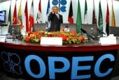 |
|
|
９ ） BRIC S 開発銀行で勢いを増すアジアと欧米の国際機関の衰弱死
「闇の支配者達」により支配されてき た IM F （国際通貨基金） や IBR D （国際復興開発銀行＝世界銀行）及 び BIS ( 国際決済銀 行) のような国際機関だが 、 BRIC S 開発銀行が既に設立され他のアジア中心の国際機関の設立の可能性もある中、彼らの役目はもう既に終わっている 。 IM F のトップは欧州から、そして世界銀行のトップは米国という参加国の意向を全く無視した人事だけでなく、これらの機関が今まで行ってきた悪行に世界が遂に「否」を突き付けたのである。（興味深いことに米国 の IRS / アメリカ合衆国内国歳入庁は法的にはアメリカ合衆国政府の機関ではな く IM F の機関であることが指摘されており、現在米国ではアメリカ合衆国憲法が悪党達により過去に改ざんされた疑いも出ているようである。）
「闇商人達」の僕機関であ る IM F は闇商人達が戦争を起こした国々に払えるわけもない額の貸付を行い、その国を支配する 。 IM F が押しつけた緊縮財政政策により道端で飢死をして殺されたギリシャ人達やまだ苦しんでいる南欧の人々が、今後国際司法の場においてこれら機関を訴える日が到来するのもそう遠い将来ではないであろう。南欧が経験した悲惨な状況は無知な政策がゆえに起こったものではなく、これらの機関が「闇の政府」の実質的な所有物であり、彼らの利権と命令に従うだけの内部が既に腐りきった機関が一般市民のことを何も考えずに行なっている政策だからである。世界銀行も中央銀行の銀行であ る BI S も同様に「闇商人達」金融一族達の管理下にある。
これらの機関の運命は自然消滅をして（アジア ・ BRIC S と他の参加国がもう資金を出さないので ） BRIC S 開発銀行やこれから設立される他の新しい国際機関にその機能を移行されるか、または完全に腐りきった内部から「闇商人達」の僕役員達を追い出して新規な機関としてやり直すかのどちらかであろう 。 IM F が今、中国に一生懸命に媚を売って本部をアジアに移す意向がある旨を伝えているのはこのためである。
（そして、直近のオーストラリアのブリスベーンで開催され た G2 0 サミットで新しいインフラ開発銀行案が浮上したが 、 BRIC S の動きに対抗するものなのか一部のお人よし国の納税者のお金が閉店間際の銀行どんぶり勘定と一緒にごちゃまぜにされ、ごまかされてしまいそうなスキームであり、今後の動きを注視する必要があるであろう。）
|
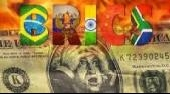 |
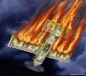 |
|
1 0 ）人類を救う埋蔵金と価値のある通貨による新しい通貨制度
世界銀行の内部告発者であり法律顧問代理及びグローバル・デット・ファシリティ （ Global Debt Facilit y ）の法律顧問を中心とする協力者（政治・司法・軍事関係者）グループは「闇商人達」が何世紀もの間、人類から隠してきた金を全人類救済のために放出させようとしている。このグループの主張では、世間では悪党として知られてきたフィリピンの元大統領フェレナンド・マルコスだが、実は弁護士でもあったマルコスは半世紀前に全人類にとって最も重要なことをしてくれていたようである。それは、どのくらい過去に遡るのかは分からないが、マルコスはインカ文明を含む過去の時代から「闇の支配者達」が全人類から搾取し隠し続けてきた埋蔵金を法の管理下に置いてしまったのである。この合意書 は 195 0 年に調印されており、既 に 5 0 年以上が経過した現在、「闇商人達」の埋蔵金に対する権利は消滅されている。マルコスはどうや ら 5 0 年後の今、（結果的には）人類にその埋蔵金の利権を戻すためにこの法的手段を取っていたようである。これがあの山下財宝で知られる金であり、その総量 は 1,750,00 0 メトリックトン （1 メトリックトン ＝ 1,00 0 キログラム）。現在フィリピン中央銀行とハワイ、日本の邦銀を含むアジア、欧州の民間銀行の金庫に保管されているようである。
このグローバル・デッド・ファリティに保管されている金を使用して何の価値もない紙屑紙幣を金の紙幣（１つの案としては金を薄く延ばす技術により実質、紙でなく金を何グラムか含む金幣）や金のコイン等で各国通貨の価値と信頼を取り戻し、米連銀を含む世界の中央銀行を支配する民間の金融一族達から人類を解放して、公的機関である財務省に通貨の発行権を移行させ、貧困の絶滅、人類を「闇商人達」が私達に負わせた債務からの解放、福島を含む環境対策等の目的に使用される計画を述べている。この利権が人類に戻るということは人類の債務が帳消しになるということである。一般市民が中央銀行の所有者である「闇商人達」に対して債務を負っているのではなく、今度は彼らが私達に対して債務を負う番になる。まさに世界は「偽りの国旗」による戦争」を繰り返し行なってきた闇商人達により無理やり強いられてきた「負債の鎖」から解放されるのである。今度は私達一般市民が闇商人達の足に鎖を付ける番が遂にやってきた。
そして、同グループは雇用創出のために地方通貨の発行も視野に入れているようだが、これは「闇商人達」が世界支配のために考えていた単一通貨「アメロ（アメリカドルとユーロを統合した通貨）」の逆を進む道であり、グローバリストによって破壊・統一化されてしまった世界の人々が立ち上がり、世界各国での独立運動（英国、カナダ、スペイン等）が拡大している現在、地方通貨発行による雇用創出は正しい判断であると言えよう。インターネットが存在する今、インドネシアの農村とアルゼンチンの農村が直接ビジネスを行うことも可能なのである。国際化とグローバル化（後者は闇商人資本による世界支配）は全く異なるものであり、各地域での経済活動の活発化は雇用を生み、それが独自の通貨と文化で行なわれていれば、今までのように「闇商人達」の巨大資本が国境を越え全てを潰して飲み込んでゆくことが難しくなる。
闇商人達に牛耳られているユーロの制度も最終的には崩壊して各国の通貨に戻ってゆくであろう。ユーロはもともと世界単一通貨を考案していた闇商人達のビジネスであり、彼らの最終目的は上記のアメロの世界単一通貨と世界統一国家で世界を支配することであったが、グローバル化の失敗（極端な貧富の差の拡大により遂に自分達が攻撃をされるようになり、今までの悪事が全て一般市民にばれてしまった）、今度はその反対の動きで全てが「分散化」してゆくのであろう。今後、さらに独立する国々も増えることが予想される。
この健全的な各国・地方分散化的な動きはグローバル化による資本集中に対抗するもので、その国・地域の文化・雇用に重点を置くもので、決して非国際的な動きではない。むしろグローバリトにより破壊された各地域の文化と雇用を促進しつつグローバリト達による資本支配を破壊し、より国際的で健全な世界経済の発展を促す動きになるであろう。
ちなみに、この山下財宝に関しては大戦中に日本に運ばれて一部が日銀の地下室に、そして残りがアルゼンチンに運ばれたという説も存在していたが、山下大将とヒットラーが母親違いの兄弟であったという関係と、ヒットラーがドイツで死なずにスペインのバルセロナ経緯で潜水艦に乗りアルゼンチンに逃れ て 196 0 年代後半まで生き延びていたことが明らかになってきた今、多くの謎が解明されてきた。第二次世界大戦後に見られた南米での異常な軍事政権の歴史もナチス・ドイツが南米に移住していた事実が分かれば理解できる。どうりでよく似た軍事政権であったわけである。ナチスの医師で死の天使として恐れられていたヨーゼフ・メンゲレが教会の助けを得て（米国の招きによりアルゼンチンではなく）米国に渡り、そこで何をしていたかは米国の軍事施設の地下で水面下に行なわれてきた「狂人医学」について調べれば分かるであろう。人間のモラルを通り越した実験である。彼はアウシュビッツで双子の研究に没頭していた。米国の「闇の商人」財団が優生学と呼んでいた研究である。どうやら私達は全く異なった次元の歴史を信じ込まされていたようである。ヒットラーがドイツ人でないことも、ナチスの歴史もまた「闇商人達」に仕掛けられた戦争ビジネスであり彼がただの役者であったことも知れ渡った今、各国の歴史学者達には全ての歴史の教科書を書き換えなければならない大作業が待ち受けているようである。この「闇の支配者達」が支配してきた異常な世界と「偽りの国旗」による世界規模の詐欺システムの仕組みは世界中にさらされており「狂人達」は今、崩壊寸前の状態である。世界規模のパラダイムシフトはもう既に起こっている。
|
|
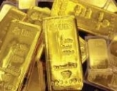 |
|
1 1 ）民間所有の中央銀行による「紙屑紙幣の印刷ビジネス」
フランス革命時代に社会保障制度が存在していれば革命は起こらなかったであろう。これは一部の歴史学者達の見解である。「闇の支配者達」により演出されてきたグローバル化の波で貧富の差が許し難いレベルにまで広まってしまった現在、中間層は低所得者等となり、低所得者層は貧困層となり、貧困層はまるで犬や猫のような生活を強いられている。 いい加減に手を抜いて守備よくここまで欲を出さずにやってさえいれば、無理をして我慢をしていた人達もまだいたかもしれない。しかし悪事も振り子のように、ある一線を越えてしまうと振り子（民衆）は大きく揺れてもう元の位置には戻らなくなる。大きく揺れた拍子に金具（抑制）が外れ、覆い囲んでいたガラス（見えなかった制度）を粉々に破壊してしまうのである。これが今まさに世界で起こっている。怒った民衆が立ち上がり、「現代版のフランス革命」が起こってしまった。（ちなみに昨年、ギロチン台が入札された。このギロチン台にはフランス語の文字が刻み込まれており、展示目的で購入されたと説明されているが一部の悪党達にとっては背筋が凍りつくニュースであったであろう。）そして、この現代版フランス革命の参加者達は「闇商人達」の心臓であり資金源である中央銀行の「紙屑印刷ビジネス」と、アキレス腱であるペトロダラーを容赦なく攻撃し始めた。
多くの人達は過去一世紀もの間、中央銀行が民間機関であり「闇商人達」の私物であることに気づかなかった。そして中央銀行のビジネスが、何もない箱からウサギを取りだす手品のようなカラクリの世界と同様である事実も知らなかった。さらに、「中央銀行は政府から独立した機関である」という意味が実は、中央銀行の所有者である「闇商人達一族」が各国政府に戦争をさせてその国・国民を借金漬けにしてぼろ儲けをしたとしても、「債務者にされてしまった政府や国民は中央銀行に対して何もできない」ということさえ想像すらしてこなかったのである。中央銀行総裁も経済理論を語っているふりをしているだけの金融機関のえせエコノミスト達も「この中央銀行を所有している一族は何と言う名前の一族ですか」という最も原始的な質問には答えられない。前者は喋ると命の危険があるからであり、後者は単に多くの中央銀行が民間所有であることすら知らない人々である。
この邪悪な民間所有の中央銀行制度に反対してきた元米大統領達（複数）を含む多くの人々は脅かされるか暗殺されて闇に葬られてきた。通貨発行権を中央銀行から財務省に移そうとして「闇の支配者達」による中央銀行の支配を終わらせようと試み た J.F . ケネディ元米国大統領の暗殺についてのすべての真実が、今半世紀を経て人々の前に明らかにされようとしている。現在、このタイミングで娘であるキャロライン・ケネディが駐日米国大使に就任したのは何かしらの歴史的な因果であろうか。彼女はこの歴史的なタイミングでとても重要な場所にいる。新通貨制度は米国債の債権国上 位2 位の日本と中国、そして現在もう既に「闇商人達」が仕切ってきた世界に「否」を突き付け た BRIC S 諸国とそれを見守っている南米を含む他の国々という構図の中で、日本は中間的且つ重要な位置を占めている。 今年の夏、この紙屑紙幣（不兌換 紙 /Fiat Currenc y ）を終わらせるために上記国際機関の内部告発者と日本を含む各国の関係者達の間で話し合いが行なわれていたようである。紙屑紙幣でなくグローバル・デット・ファシリティの金を使用した実質的な価値のある新通貨は米ドルだけでなく、円やユーロを含むすべての通貨に適応されるものとされている。１）発行権を財務省に移し、２）価値のある通貨を発行する。世界の通貨を支配してきた「闇の支配者達」からそのすべて（発行権、埋蔵金、ペトロダラー）を取り戻した人類は、今まさに新しい船出に出ようとしている。悪党達の経済奴隷ではない生活である。
|
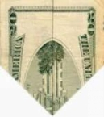 |
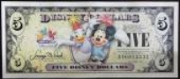 |
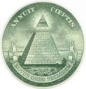 |
|
|
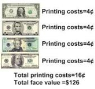 |
|
1 2 ）米国連邦準備銀行 は 10 0 年の民間所有による歴史に幕を閉める前夜にある
世界の民間中央銀行に関するすべての真実が明らかにされた時、私達が信じ込まされてきた金融・政治・社会の仕組みという概念は根本から崩れ落ちるであろう。今までの常識はこの上ない非常識であることに人類が気づく日はもうそう遠くない将来である。
民間所有の中央銀行によるカラクリとその歴史について世界の人々は目覚め始めている。唯一この中央銀行の仕組みに気づいていないのは金融機関のエコノミストぐらいであろう。彼らは今、沈ずみかけた船に乗りながら中央銀行の次の金融政策がどうなるか（今晩の夕飯）について議論をしている。船はもう沈み始めている（今までの中央銀行の制度はもう崩壊している）のに、である。米連邦準備銀行が設立されたのは今からちょう ど 10 0 年前 の 191 4 年 （ 191 3 年に連邦準備法が成立）。タイタニック号が沈んだ直後に設立され、米連邦準備銀行の設立に反対していた人達が多く乗船していたこと（及びタイタニックの所有者が病気を理由に乗船しなかったこと）から、現在でもタイタニック号の事故はいまだに色々な憶測を呼んでいる 。 200 1 年に米国の貿易センタービルで起こっ た9・ 1 1 同時多発テロの際に、ビルの所有者が医者との約束を理由にその日だけ偶然出勤してこなかったのと非常によく似ている。やはり歴史は（同じ悪党劇団により）繰り返されるのであろう。
ワシントンの「アメリカ株式会社」（米国人の意向でなく外国政府の意向により動かされているのでこのように呼ばれている）であるホワイトハウスの戦争ビジネスのため に 9 9 ％の米国人は天文学的な借金を負わされている。自分達で戦争劇を自作自演し、軍事、石油、医療、銀行全てを操ってきたこの「世界的な詐欺師集団」が所有する連邦準備銀行が紙幣を発行するたびにドルの価値が下がり続ける（他の国々の通貨発行と通貨価値も同様である）。米国民は（他の国々の民間人も）国の政策を支援するために税金を払っていると思い込まされているが、実際は民間所有の中央銀行が「紙幣印刷機」によって発行している何の価値もない紙屑紙幣（紙屑紙幣の価値は信用だけである）を印刷するたびに金利負担を支払わされているだけなのである。支払わされている金利は最終的には中央銀行を所有している民間一族達の懐に入る仕組みになっている。私達が払っている税金の多くは、私達が考えているように公共事業や社会福祉のために使われているわけではない。国の負債額とその金利負担を考えれば容易に分かるであろう。さらに、正式な数字として出てこない部分でも闇商人達の懐に入ってゆく仕組みである。この「紙屑紙幣印刷ビジネス」のカラクリに多くの人々が目を覚ました今、世界中で民間所有の中央銀行を国有化させる（財務省に通貨発行権を移す）圧力が拡大しており、現在既にそのピークに達している。
設立 後 10 0 年が経過した今、米国連邦準備銀行はその民間所有による歴史に幕を閉める前夜にある。そしてこれは日本（日本の場合、政府の出資 が 55 % で残り の 45 % の株式は民間出資）、欧州、アジアを含む他の民間所有の中央銀行にも同じことが起こるであろう。これはとても近い将来の話である。数カ月、もしかしたら数週間、あるいはもっと早い時期にそれは起こるかもしれない。今、人類は先人達が果たそうとして果たせなかった偉業をまさに成し遂げようとしているのである。
201 4年 1 1月 1 7 日
通貨発行権を米連銀（中央銀行）から政府へ移し
米国民を闇商人達の支配から救おうとした大統領達
|
|
|
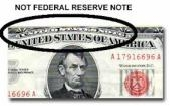 |
|
|
ジョン・F・ケネディ(35代) |
エイブラハム・リンカーン(16代) |
|
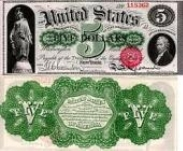 |
|
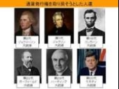 |
|
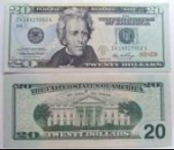 |
|
|
|
アンドリュー・ジャクソン(7代) |
|
トーマス・ジェファーソン(３代) |
|
|
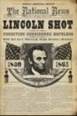 |
|
|
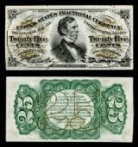 |
||
|
ウォレン・ハーディング(29代) |
ジェームズ・ガーフィールド (20代) |
エイブラハム・リンカーン(16代) |
貧富の差